Native Studio motion evidence ? 22 October 2026 Two distinct capture times per view. Open each image for full resolution. Final large-motion candidates and actual SCP-049 battle appear first. Historical failures and control comparisons follow. No single still establishes a moving gait. Investigation report
SCP-023: final large aligned gait / Front
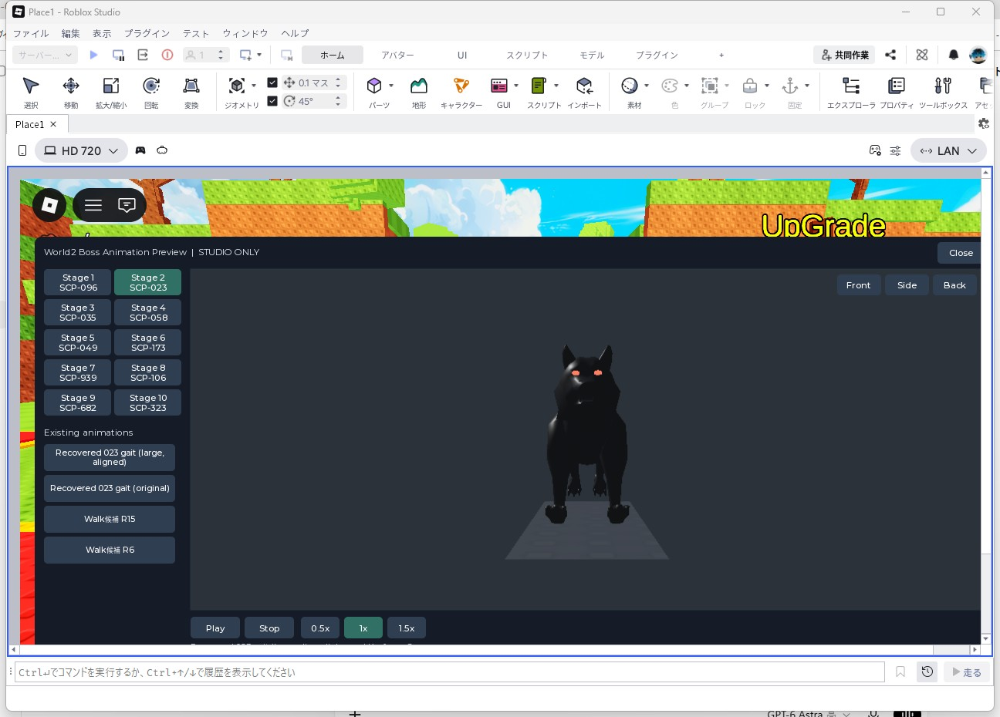
Frame 1 ? 2026-10-22T08:34:17.774811+00:00 Frame 2 ? 2026-10-22T08:34:19.326931+00:00 SCP-023: final large aligned gait / Side SCP-939: final saved clip, 1.35x swing / Front
Frame 1 ? 2026-10-22T08:34:26.925512+00:00 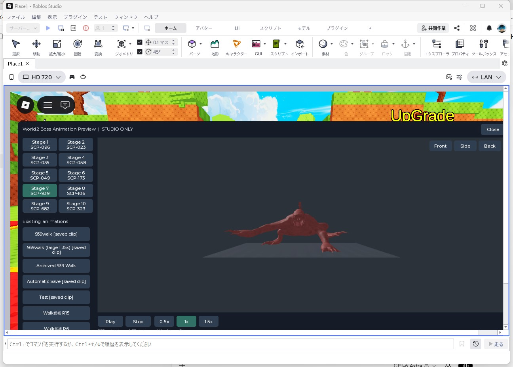
Frame 2 ? 2026-10-22T08:34:28.474505+00:00 SCP-939: final saved clip, 1.35x swing / Side SCP-049: actual personal Boss battle, black thighs / Front SCP-049: actual personal Boss battle, black thighs / Side SCP-023: first large aligned gait trial / Front
Frame 1 ? 2026-10-22T08:26:22.886760+00:00 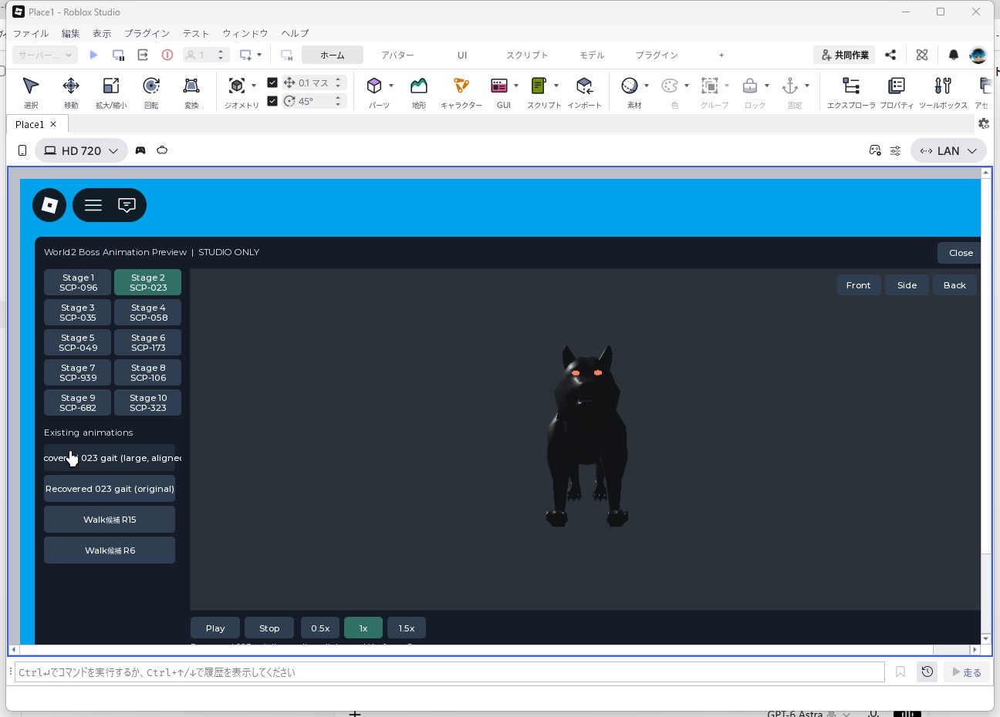
Frame 2 ? 2026-10-22T08:26:24.022106+00:00 SCP-023: first large aligned gait trial / Side
Frame 1 ? 2026-10-22T08:26:26.645654+00:00 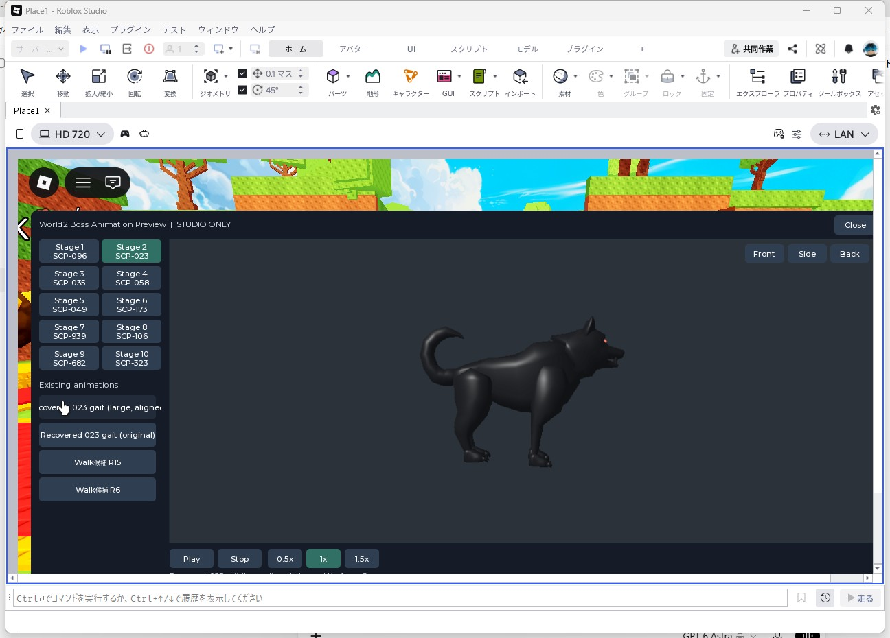
Frame 2 ? 2026-10-22T08:26:28.121146+00:00 SCP-023: recovered DesiredAngle original (stationary) / Front
Frame 1 ? 2026-10-22T08:26:31.521977+00:00 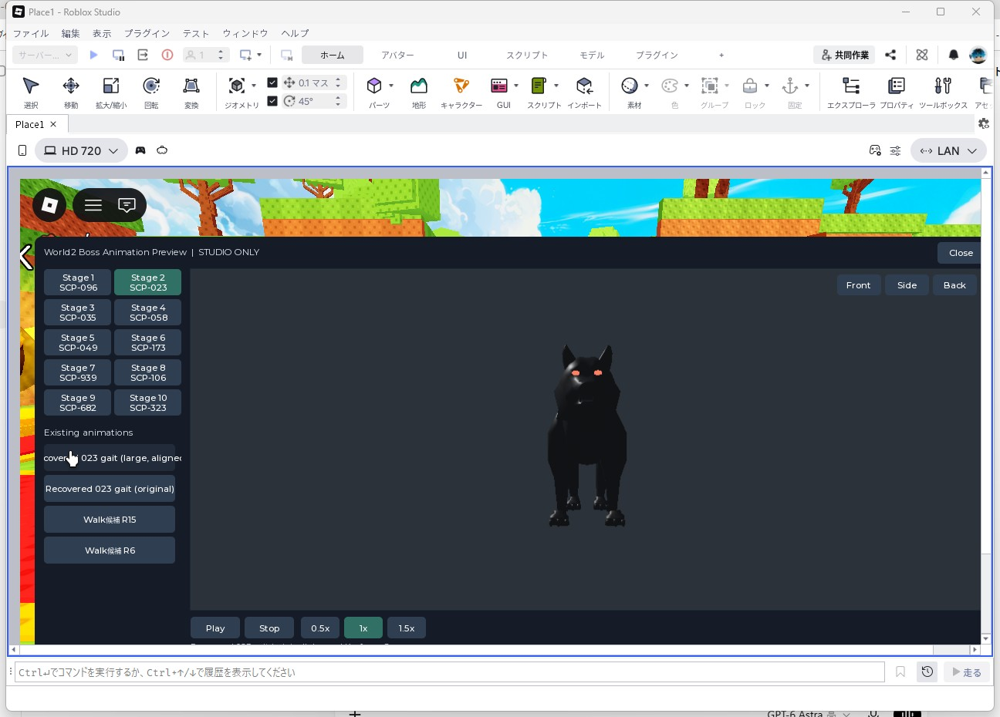
Frame 2 ? 2026-10-22T08:26:33.221723+00:00 SCP-023: recovered DesiredAngle original (stationary) / Side SCP-023: manual R6 125749145 diagnostic / Front
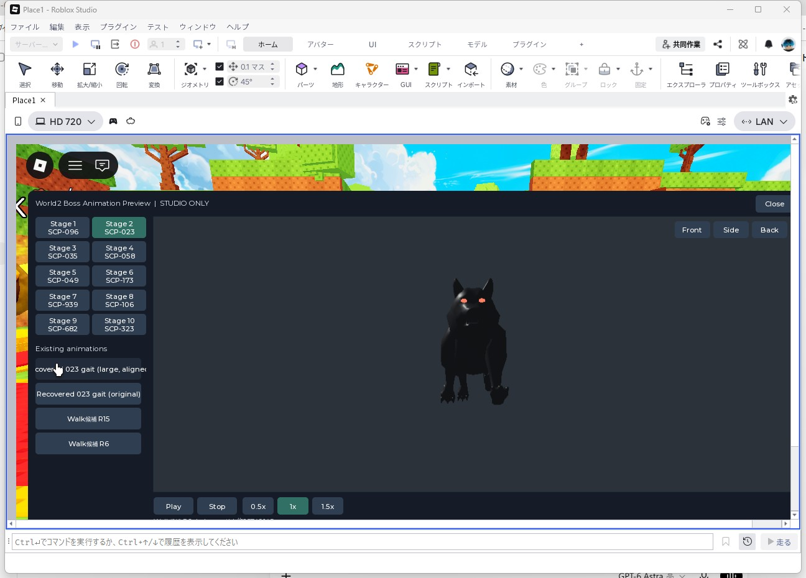
Frame 1 ? 2026-10-22T08:26:40.655050+00:00 Frame 2 ? 2026-10-22T08:26:42.337205+00:00 SCP-023: manual R6 125749145 diagnostic / Side
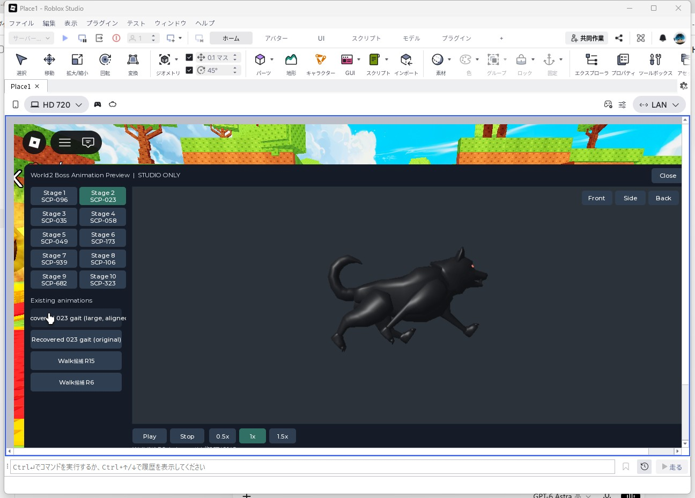
Frame 1 ? 2026-10-22T08:26:44.588507+00:00 Frame 2 ? 2026-10-22T08:26:46.321311+00:00 SCP-058: hidden carrier moves, visible body stationary / Front SCP-058: hidden carrier moves, visible body stationary / Side SCP-173: missing controller and joints (stationary) / Front SCP-173: missing controller and joints (stationary) / Side
Frame 1 ? 2026-10-22T08:27:03.069705+00:00 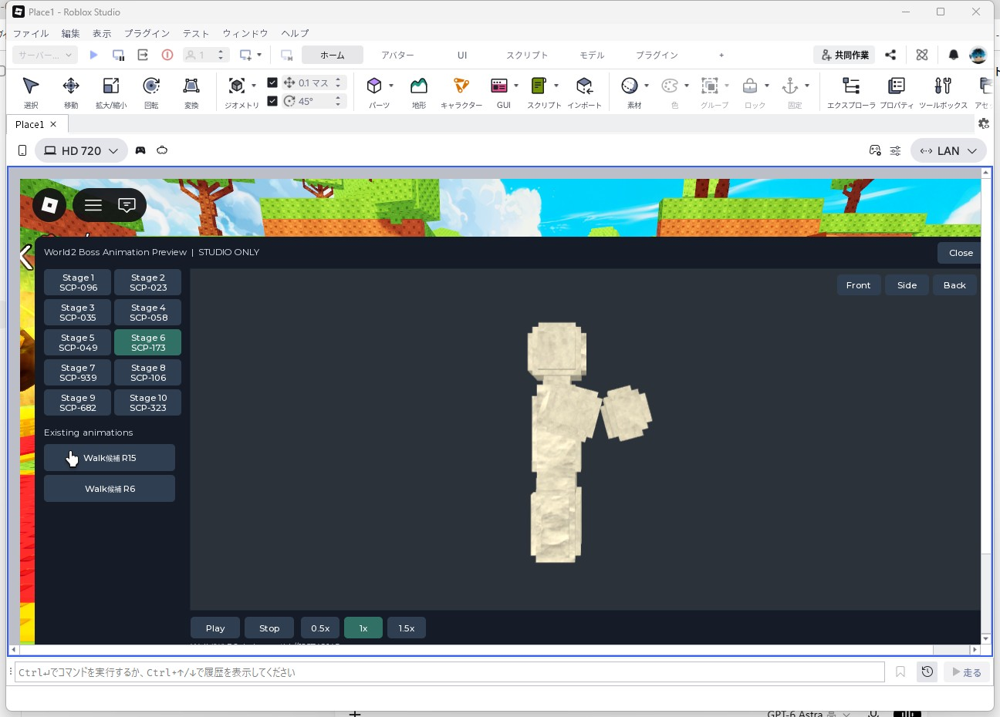
Frame 2 ? 2026-10-22T08:27:04.770991+00:00 SCP-939: original saved 939walk / Front
Frame 1 ? 2026-10-22T08:27:08.186479+00:00 Frame 2 ? 2026-10-22T08:27:09.868675+00:00 SCP-939: original saved 939walk / Side
Frame 1 ? 2026-10-22T08:27:12.402307+00:00 Frame 2 ? 2026-10-22T08:27:13.802952+00:00 SCP-939: archived Walk 4607522177 (load failed) / Front
Frame 1 ? 2026-10-22T08:27:17.453986+00:00 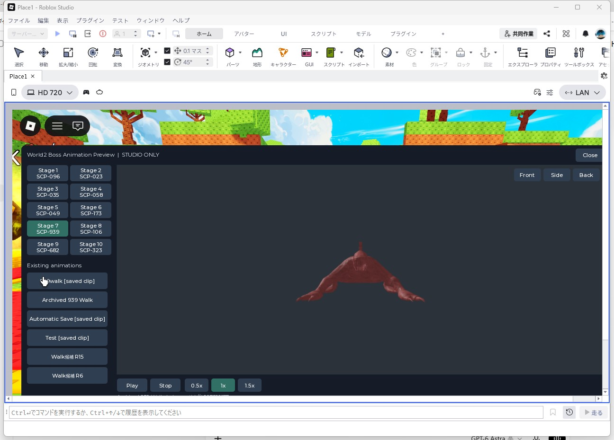
Frame 2 ? 2026-10-22T08:27:18.869509+00:00 SCP-939: archived Walk 4607522177 (load failed) / Side
Frame 1 ? 2026-10-22T08:27:21.418294+00:00 Frame 2 ? 2026-10-22T08:27:22.803364+00:00 SCP-939: saved Automatic Save / Front
Frame 1 ? 2026-10-22T08:27:26.520006+00:00 Frame 2 ? 2026-10-22T08:27:27.951938+00:00 SCP-939: saved Automatic Save / Side
Frame 1 ? 2026-10-22T08:27:30.485681+00:00 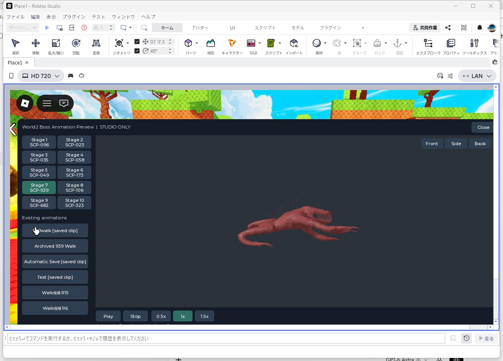
Frame 2 ? 2026-10-22T08:27:31.919740+00:00 SCP-939: saved Test / Front
Frame 1 ? 2026-10-22T08:27:35.619471+00:00 Frame 2 ? 2026-10-22T08:27:37.035648+00:00 SCP-939: saved Test / Side
Frame 1 ? 2026-10-22T08:27:39.617959+00:00 Frame 2 ? 2026-10-22T08:27:41.018396+00:00 SCP-682: WalkAnim 189040478 (load failed) / Front
Frame 1 ? 2026-10-22T08:27:44.701539+00:00 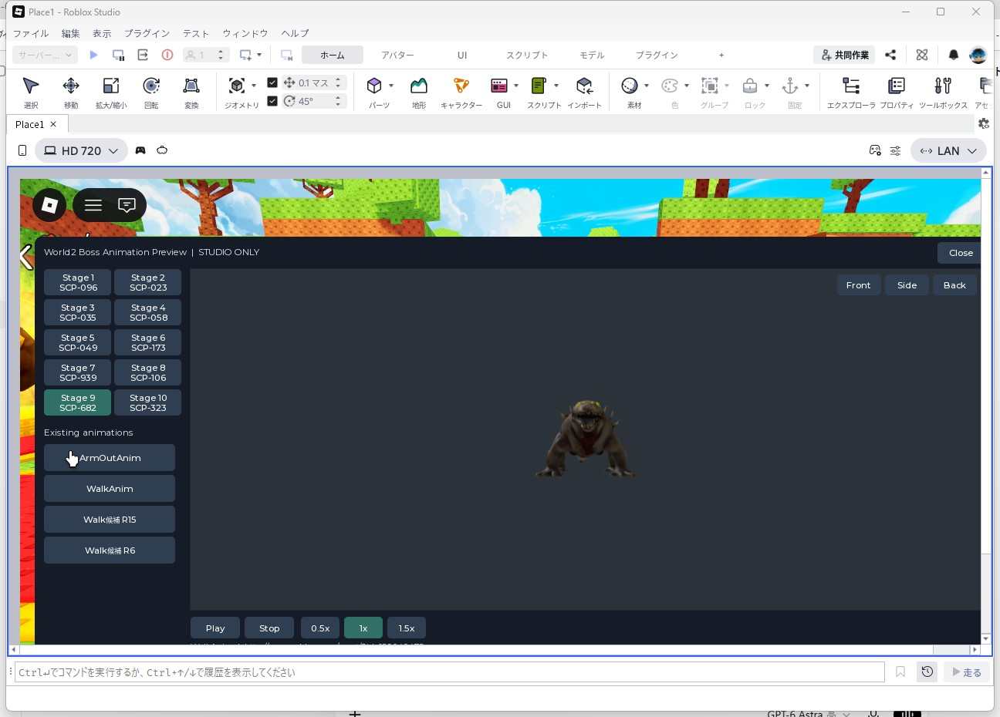
Frame 2 ? 2026-10-22T08:27:46.119536+00:00 SCP-682: WalkAnim 189040478 (load failed) / Side SCP-049: black Color alone still renders pale / Front
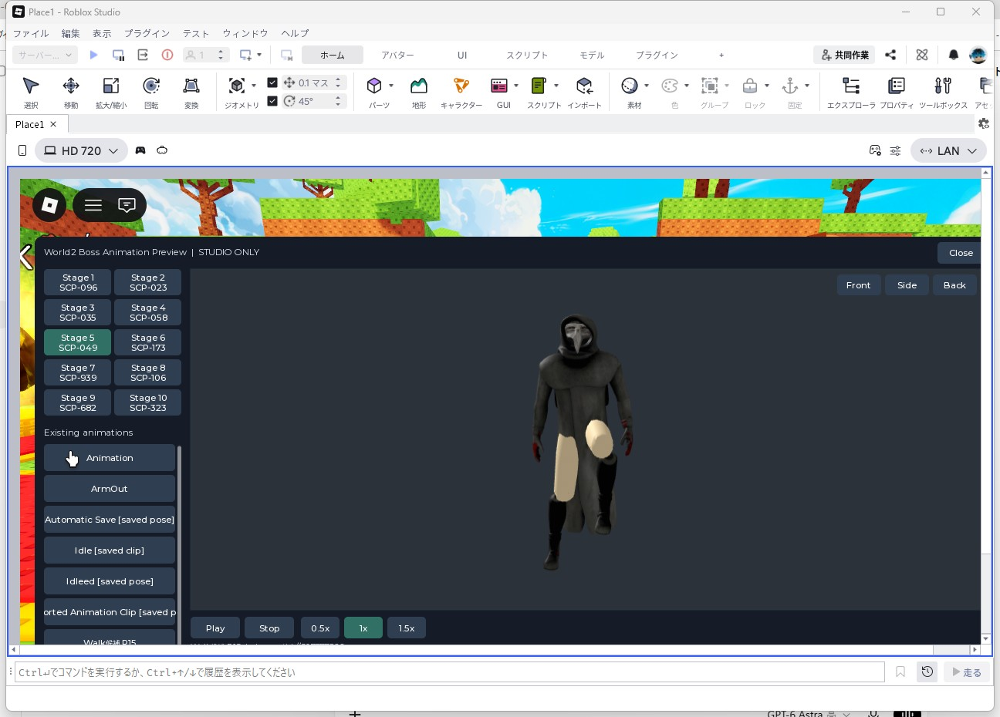
Frame 1 ? 2026-10-22T08:27:53.786242+00:00 Frame 2 ? 2026-10-22T08:27:55.485015+00:00 SCP-049: black Color alone still renders pale / Side SCP-049: thigh-only black SurfaceAppearance (adopted) / Front SCP-049: thigh-only black SurfaceAppearance (adopted) / Side SCP-049: BodyColors diagnostic (not adopted) / Front SCP-049: BodyColors diagnostic (not adopted) / Side